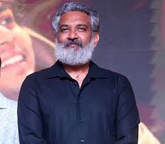

Welcome to Baahubali
Your ultimate source for all things Baahubali!
Baahubali is an Indian epic action film series directed by S. S. Rajamouli. The series consists of two films: "Baahubali: The Beginning" and "Baahubali: The Conclusion." The story, set in the ancient kingdom of Mahishmati, follows the journey of two brothers in their quest for power, honor, and justice.
The Baahubali films are known for their grand scale, stunning visuals, and epic storytelling. They have garnered a massive fanbase worldwide and have become a landmark in Indian cinema.
Impact and Legacy
Cultural Influence
The Baahubali series has significantly impacted Indian pop culture, inspiring numerous other films and media projects. Characters like Amarendra Baahubali and Bhallaladeva have become cultural icons.
Merchandise
The franchise has spawned a vast range of merchandise, including action figures, clothing, video games, and more.
Fandom
The series boasts a dedicated and diverse fanbase, with conventions, fan art, and fan fiction contributing to its ongoing popularity.
Fun Facts
Director
S. S. Rajamouli, the mastermind behind Baahubali, is known for his visionary storytelling and epic filmmaking style.
Visual Effects
Baahubali is renowned for its groundbreaking visual effects, which set new standards for Indian cinema.
Global Reach
The Baahubali series has been dubbed in numerous languages and broadcast in many countries, expanding its global reach.
About the Director
S. S. Rajamouli
S. S. Rajamouli is an acclaimed Indian film director and screenwriter, best known for his work in Telugu cinema. He gained international fame with the Baahubali series, which showcased his talent for creating epic stories with universal appeal.
Rajamouli's other notable works include "Eega," "Magadheera," and "RRR." He is celebrated for his innovative storytelling, grand visuals, and ability to create captivating narratives that resonate with audiences worldwide.
Main Characters
Prabhas as Amarendra Baahubali
The noble and valiant prince of Mahishmati.
Rana as Bhallaladeva
The ambitious and ruthless king of Mahishmati.

Anushka as Devasena
The warrior princess and love interest of Amarendra.

Prabhas as Shivudu
The son of Amarendra Baahubali, raised as a commoner.
Sathyaraj as Kattappa
The loyal warrior and servant of Mahishmati, known for his unwavering loyalty.
Ramya Krishnan as Sivagami
The powerful queen and foster mother to Amarendra and Bhallaladeva.
Movies

Baahubali: The Beginning (2015)
Synopsis
The first part of the Baahubali series introduces the kingdom of Mahishmati and the characters of Amarendra Baahubali and Bhallaladeva. It follows the journey of Shivudu, who discovers his true heritage and the legacy of his father.
Key Characters
Amarendra Baahubali, Bhallaladeva, Devasena, Shivudu, Kattappa, Sivagami.
Baahubali: The Conclusion (2017)
Synopsis
The second part of the Baahubali series continues the epic saga, revealing the fate of Mahishmati and the ultimate showdown between Amarendra Baahubali and Bhallaladeva. It also uncovers the mystery behind the death of Amarendra Baahubali.
Key Characters
Amarendra Baahubali, Bhallaladeva, Devasena, Shivudu, Kattappa, Sivagami.